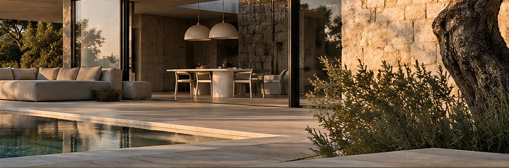
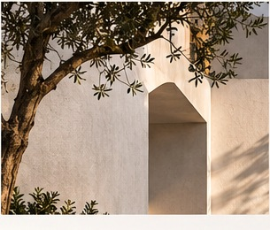

01 — 08Casa
Casa
del Río
REFORMA INTEGRAL · VILLA DE ALTA GAMADESLIZAR ↓
EL PROYECTO02
Entre el jardín
y el río.
Una transformación integral que abre la vivienda al jardín y desdibuja el límite entre interior y exterior. La luz, los porches y el paisaje se convierten en protagonistas.
UBICACIÓNSOTOGRANDE
AÑO2020—2022
TIPOLOGÍAREFORMA INTEGRAL
SUPERFICIE CONSTRUIDA770,46 m²

